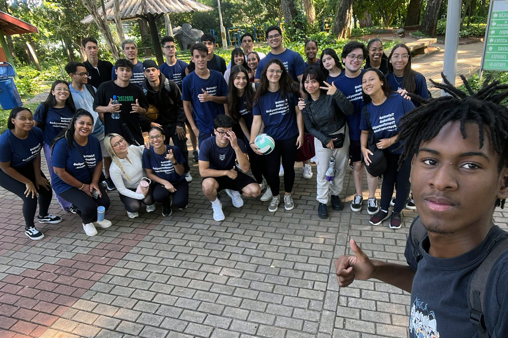
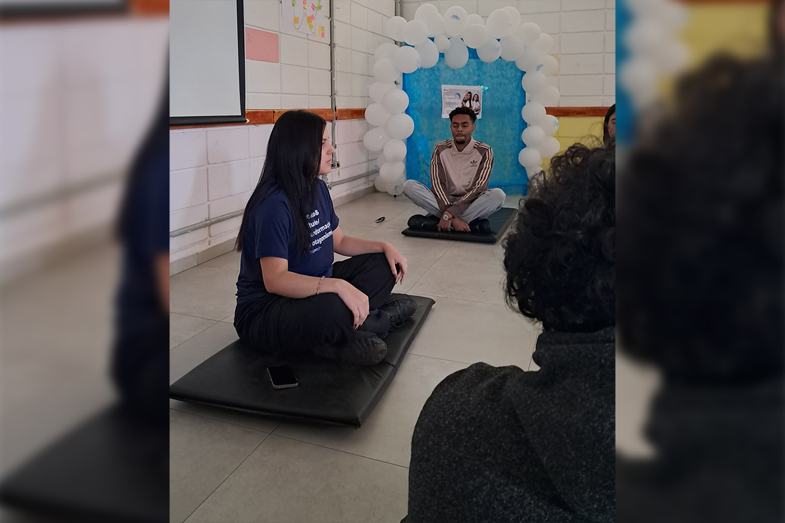
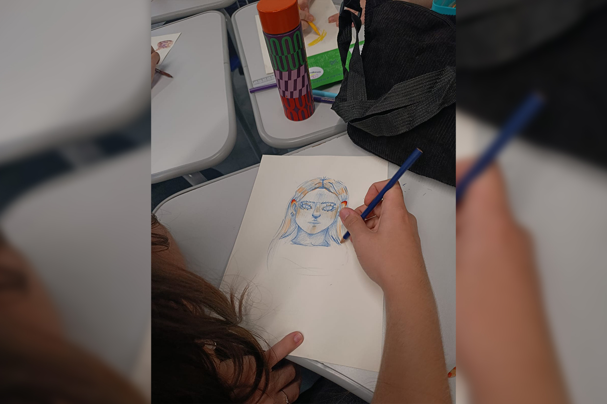
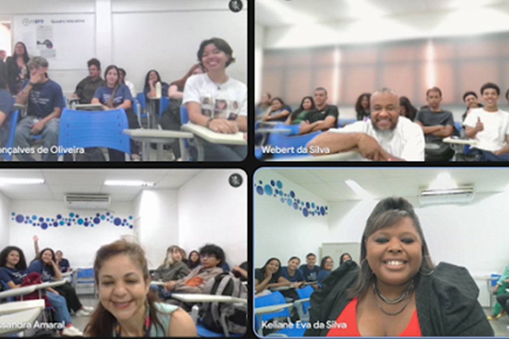
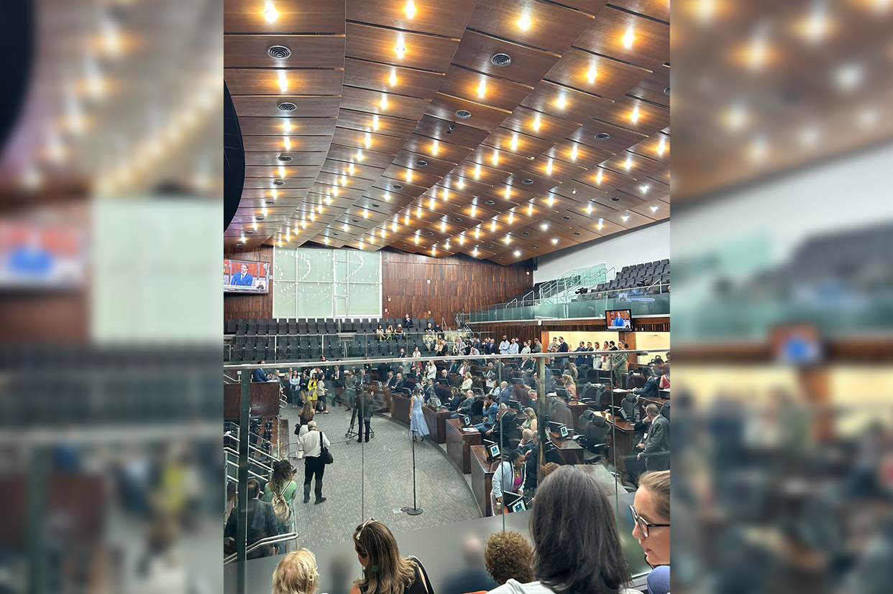
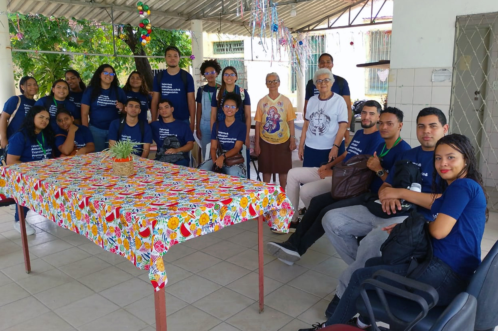
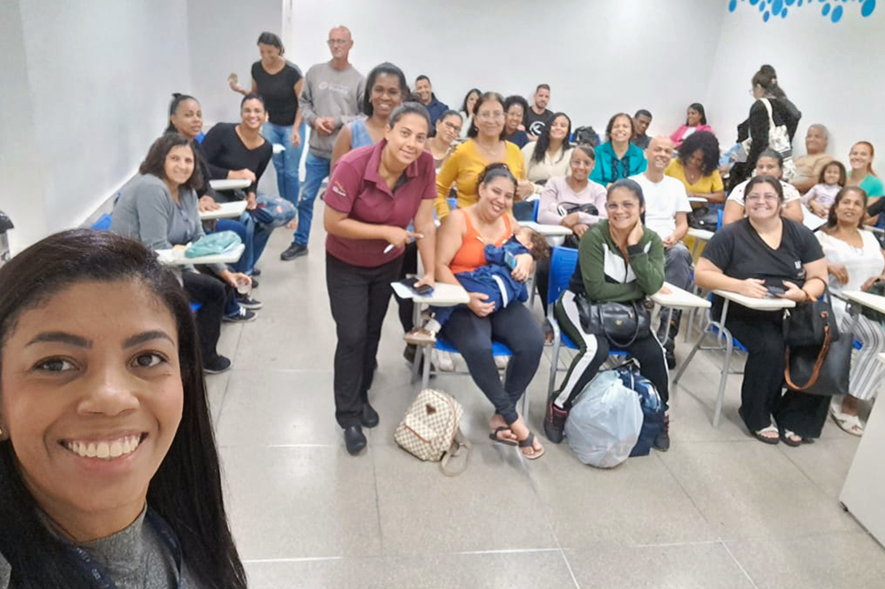

A turma 16401, conduzida pela instrutora Amanda Prates, realizou uma atividade especial na Lagoa do Taquaral, trocando a sala de treinamento por um momento de conexão com a natureza.
Em sintonia com a campanha do Janeiro Branco, os jovens participaram de dinâmicas que integraram movimento, interação e reflexões sobre bem-estar emocional e cuidado com a saúde mental. A iniciativa proporcionou um dia de troca, aprendizado e fortalecimento dos vínculos entre os participantes.
Acesse os registros da atividade
A turma 13221, da unidade de Itaguaçu (SP), realizou uma atividade especial em alusão ao Janeiro Branco, reforçando a importância do cuidado com a saúde mental e o equilíbrio emocional entre os jovens.
Após palestras sobre o tema, a turma participou de uma prática de meditação conduzida pela jovem Giovanna Franzati, que compartilhou sua experiência com os colegas. A atividade proporcionou um momento de pausa, reflexão e conexão, sendo muito bem recebida pelos participantes.
A iniciativa destacou o protagonismo juvenil e incentivou a continuidade de práticas que promovem bem-estar e qualidade de vida.
Veja imagens da prática realizadaNa unidade de Taquaral (SP), as instrutoras Carol Buck e Claudia Gallo iniciaram o projeto “Espro Unido”, um jornal interno criado com o objetivo de dar visibilidade ao trabalho de todos os colaboradores da unidade.
A iniciativa envolve a participação ativa dos jovens, que se revezam a cada 15 dias nas funções de investigadores, entrevistadores e redatores, produzindo conteúdos sobre os diferentes setores do Espro e fortalecendo o senso de colaboração e pertencimento. A primeira edição foi desenvolvida pela turma 15611 e será exposta nos espaços da unidade para ampliar o acesso às informações e incentivar o engajamento de todos.
Leia o jornalNo dia 13 de fevereiro, foi realizado um encontro online com a Casa de Apoio à Criança Carente de Contagem, instituição que atua há 30 anos no atendimento de crianças e adolescentes em situação de vulnerabilidade no município. A reunião contou com a participação da assistente social Luara Costa e da articuladora social Geralda Regina, da unidade Belo Horizonte (MG).
Durante o encontro, foi apresentado o trabalho do Espro à coordenadora Pauline Alves, da unidade de Contagem (MG), localizada no bairro Riacho das Pedras, promovendo a troca de experiências e o fortalecimento de possíveis parcerias voltadas para a inclusão de jovens no mundo do trabalho.
A iniciativa reforça a importância da articulação com o território e da construção de redes que ampliem oportunidades para jovens e suas famílias.
Confira o registro desse encontroA unidade Recife realizou a ação “Proteção em cada gole”, iniciativa de conscientização voltada ao enfrentamento do trabalho infantil e da exploração sexual de crianças e adolescentes durante o período carnavalesco. A atividade aconteceu no Recife Antigo, com distribuição de panfletos informativos e garrafas de água adesivadas com mensagens da campanha.
A mobilização contou com a participação da turma 16131, conduzida pela instrutora Michelle Moura, fortalecendo o protagonismo juvenil na promoção da cultura de proteção integral e incentivo à denúncia de violações de direitos. A ação também teve articulação com parceiros como a Prefeitura de Recife, o Fórum Estadual de Prevenção e Erradicação do Trabalho Infantil em Pernambuco (FEPETIPE) e o Instituto Aliança com o Adolescente, ampliando o alcance da iniciativa.
Veja os registros da mobilização
Em alusão ao Janeiro Branco, a turma 15667 participou de uma atividade voltada à conexão entre corpo e mente. O encontro começou com uma prática de respiração consciente e meditação guiada, proporcionando um momento de relaxamento coletivo e pausa na rotina.
Na sequência, os jovens realizaram uma dinâmica de autoconhecimento, na qual desenharam sua própria “persona”, refletindo sobre sentimentos, pensamentos, pontos de melhoria e metas futuras. A experiência incentivou a introspecção e destacou a importância de momentos de cuidado com a saúde mental no dia a dia.
Acompanhe a atividadeA turma 017099, responsável pela empresa INTEIRAMENTE, realizou uma atividade voltada às teorias administrativas, explorando na prática a organização e o funcionamento de uma empresa. Durante a apresentação, os jovens compartilharam como cada setor atua e de que forma a integração entre eles contribui para a geração de recursos e para a manutenção das atividades.
A iniciativa fortaleceu o entendimento sobre gestão, colaboração e visão sistêmica no ambiente organizacional.
Acesse a apresentação
Entre os dias 27 e 30 de janeiro de 2026, o Projeto final Gestores do Futuro reuniu mais de 1.600 jovens do Espro de diferentes unidades de Minas Gerais em uma experiência imersiva online baseada na simulação de empresas fictícias.
Durante as apresentações, os participantes aplicaram na prática conhecimentos desenvolvidos ao longo da formação, como gestão, liderança, trabalho em equipe, comunicação e tomada de decisão. A conexão simultânea entre as unidades possibilitou troca de ideias, integração e construção coletiva de soluções.
A iniciativa reforça o protagonismo juvenil e o compromisso do Espro com metodologias inovadoras que preparam os jovens para os desafios do mundo do trabalho.
Confira as apresentações dos jovens
No dia 10 de fevereiro, os jovens da unidade de Porto Alegre (RS) realizaram um treinamento sobre organização de eventos, cerimonial e protocolo. Sob a condução do instrutor Marciano da Rosa, a turma realizou uma visita técnica ao Palácio Farroupilha, sede da Assembleia Legislativa do Rio Grande do Sul, no Centro Histórico de Porto Alegre.
Durante a atividade, 22 jovens tiveram a oportunidade de conhecer a estrutura do Poder Legislativo, acompanhar a abertura do ano legislativo no Plenário 20 de Setembro e visitar o Memorial do Legislativo, onde participaram de uma conversa sobre cerimonial e protocolo público.
A experiência proporcionou a conexão entre teoria e prática, ampliando o conhecimento sobre cidadania, organização de eventos no setor público e desenvolvimento profissional.

Na unidade Recife, os jovens da turma 15831 participaram de uma ação social de arrecadação de materiais de higiene, limpeza e brinquedos em apoio ao Dispensório Santo Antônio, instituição que acolhe pessoas de outras cidades que permanecem no local durante o tratamento médico de familiares.
A iniciativa foi conduzida pela empresa fictícia Educart, que recentemente passou por uma reestruturação em seu organograma. A mobilização marcou a primeira ação realizada após essa mudança, fortalecendo o engajamento da turma em práticas de cidadania e solidariedade.
A atividade reforçou o compromisso dos jovens com a responsabilidade social, contribuindo para apoiar uma instituição que depende de doações para manter suas atividades e continuar acolhendo quem precisa.
O episódio completo já está disponível no YouTube. Confira aqui.
A turma 16221, da unidade de Itaguaçu (SP), desenvolveu uma atividade especial no projeto Gestores do Futuro, dedicando o mês de janeiro ao tema Planejamento. Como resultado, os jovens produziram um episódio de podcast com reflexões e dicas sobre como transformar metas em ações concretas.
Para enriquecer a conversa, a turma convidou Leandro Pires, gerente de Educação e Aprendizagem do Espro, que compartilhou sua trajetória profissional iniciada também como Jovem Aprendiz, e trouxe orientações sobre gestão de tempo, finanças e o equilíbrio entre hard e soft skills.
A experiência proporcionou um encontro inspirador entre gerações, reforçando o protagonismo juvenil e o aprendizado na prática.
Acesse aqui os registros da ação social
As turmas 15699 e 15700, da unidade Belo Horizonte, participaram de Oficinas de Convivência conduzidas pela assistente social Amanda Oliveira, reunindo 75 jovens em momentos de reflexão e aprendizado que vão além das competências técnicas.
Durante as atividades, foram abordados temas fundamentais, como direitos sociais e maternidade/paternidade não planejada, incentivando os jovens a refletirem sobre planejamento de vida, responsabilidade e cidadania. As dinâmicas promoveram diálogo e consciência sobre o papel de cada um na construção de trajetórias pessoais e profissionais mais conscientes.
A iniciativa também incluiu uma oficina voltada para os pais e responsáveis, com o tema “Pilares da Família”, ampliando o diálogo e reforçando a importância da rede de apoio familiar no desenvolvimento e na formação dos jovens.
Veja os registros das oficinas de convivênciaE aí, curtiu o novo formato e as informações do Minuto do Instrutor? Lembre-se de compartilhar com a gente o que tá rolando em sua unidade e dê sugestões de conteúdo!
Deixe um comentário aqui 👇🏼. Sua opinião é importante para nós!